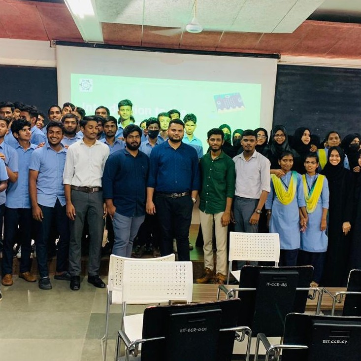
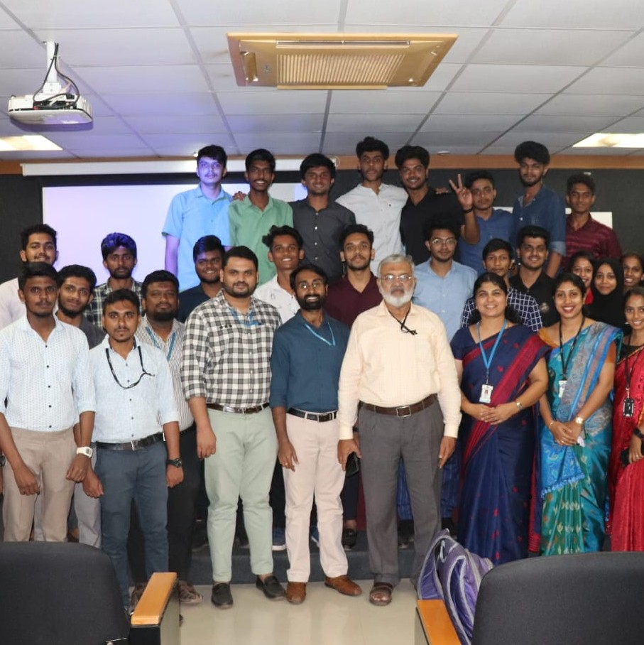
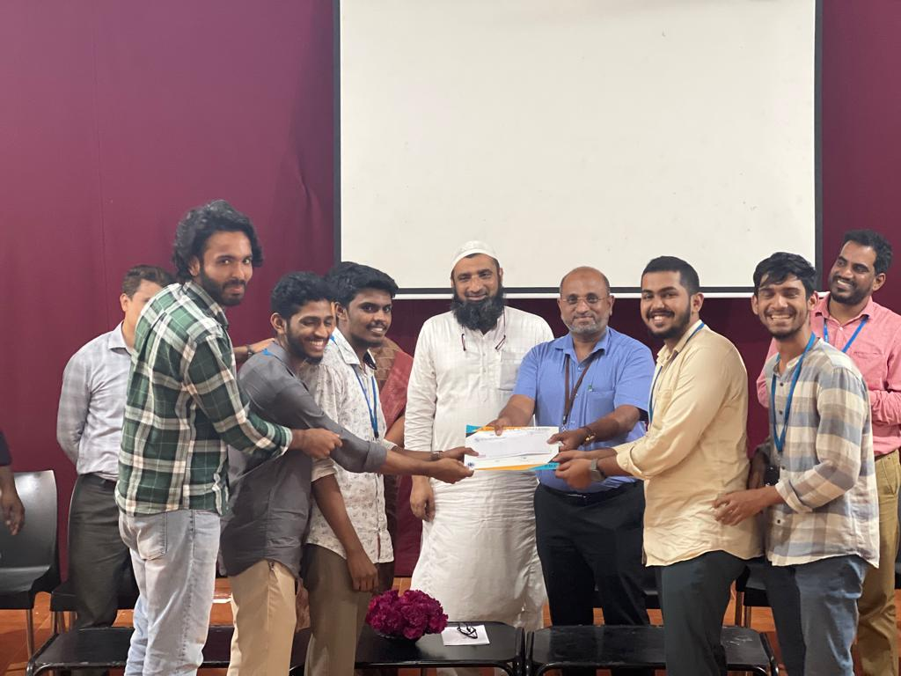
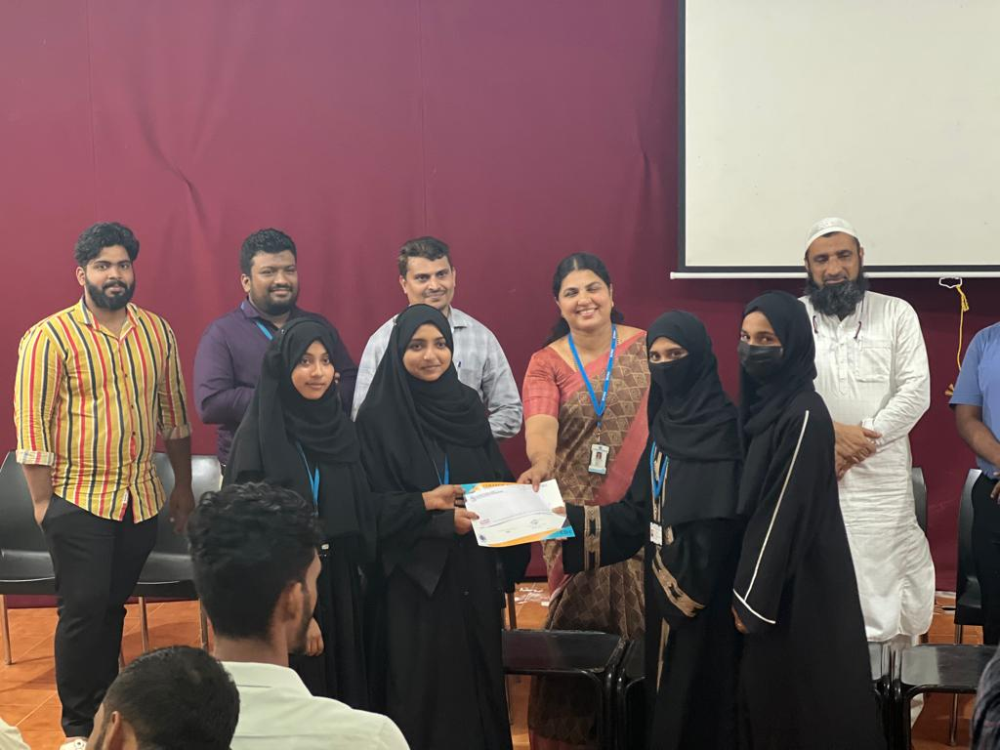
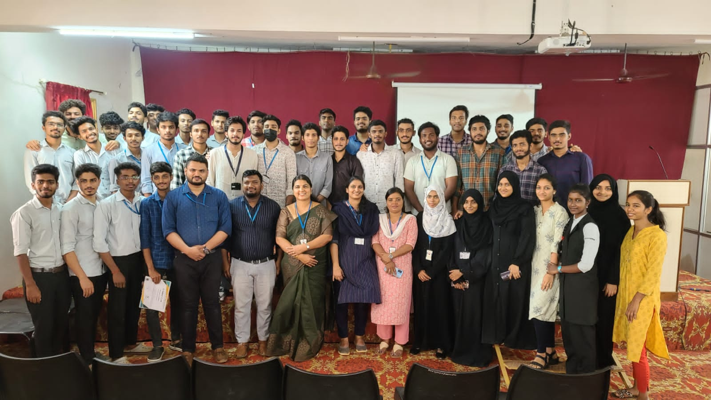
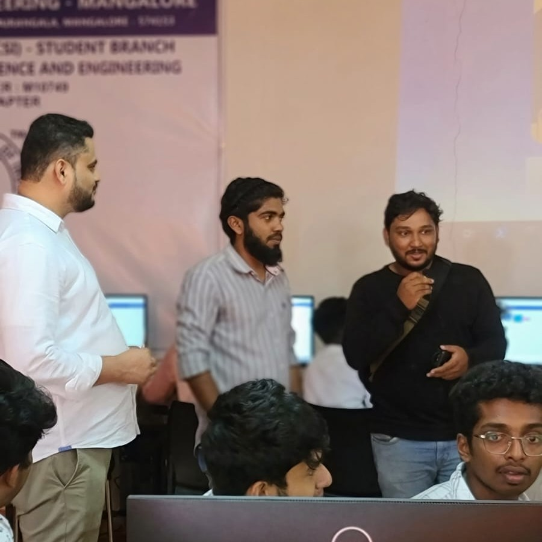
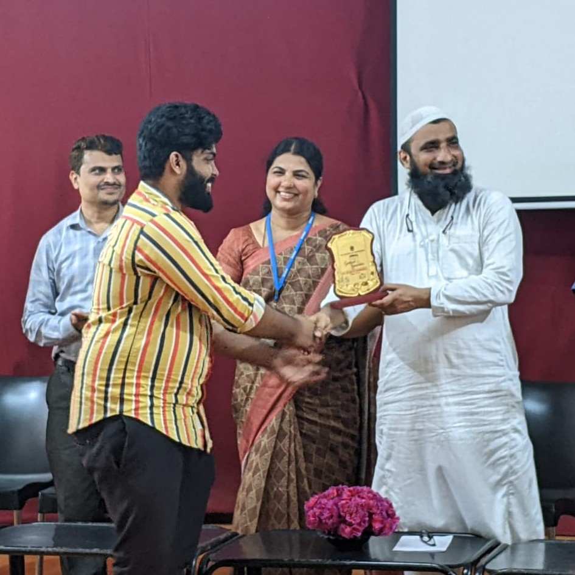
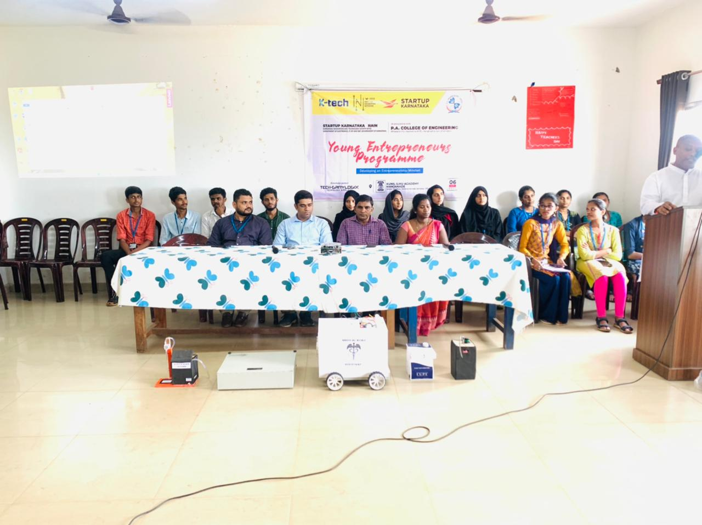
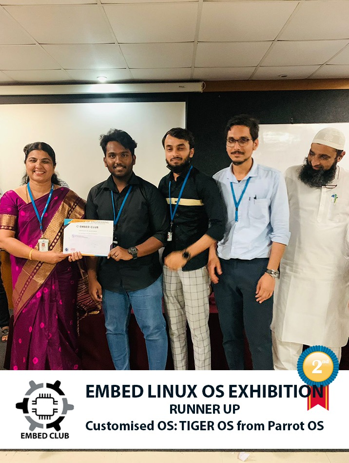
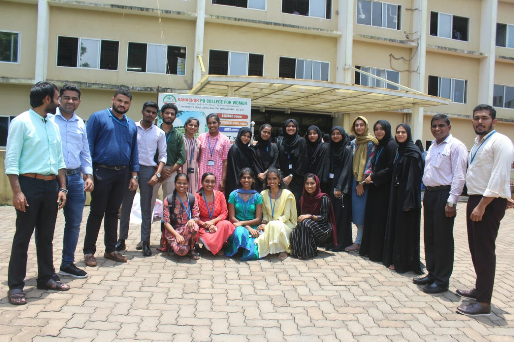

ADC Winners @ IIIT.B

IIT.b
10/mar/2023
ADC 2022 Champions! 🏆
Our team of ingenious students proudly representing Embed Club - Shabnaz, Rifah Aysha and Sumaya recently participated in ADC 2022 - a prestigious national-level project competition held at IIIT Bangalore and emerged as the proud winners! Their project "Flygirl," an automatic sanitary pad vending machine, stole the spotlight with its cutting-edge technology and social impact. This win is a testament to our commitment at Embed Club to foster and nurture the creativity and talent of our students. Embed Club is proud to have them as representatives and looks forward to their continued achievements and contributions in the future.
Our team of ingenious students proudly representing Embed Club - Shabnaz, Rifah Aysha and Sumaya recently participated in ADC 2022 - a prestigious national-level project competition held at IIIT Bangalore and emerged as the proud winners! Their project "Flygirl," an automatic sanitary pad vending machine, stole the spotlight with its cutting-edge technology and social impact. This win is a testament to our commitment at Embed Club to foster and nurture the creativity and talent of our students. Embed Club is proud to have them as representatives and looks forward to their continued achievements and contributions in the future.
Workshop at BIT

BIT
18/oct/2022
The Embed Club conducted an enriching workshop on Microbit and IoT at Bearys Institute of Technology.
The workshop aimed to empower students with the knowledge and skills to create innovative projects using Microbit and IoT technologies.
The participants learned about Microbit programming, basic IoT concepts, sensor integration, and data communication through hands-on activities and practical demonstrations.
The workshop was led by members of the club Muadh, Jouhar, Nouman and Imad provided an engaging learning experience for the students, inspiring them to explore the possibilities of Microbit and IoT in the world of embedded systems.
Workshop at PACP

PACP
23/mar/2022
Conducted an exciting workshop at P A Polytechnic, introducing the students to the world of microcontroller programming through the user-friendly Microbit board.
The workshop aimed to make learning easy and interesting, using a hands-on approach, with step-by-step guidance and interactive activities that made programming accessible and enjoyable for beginners.
Through block-based programming, the students learned coding concepts in a fun and interactive way, creating their own projects and witnessing their code come to life on the Microbit display.
The workshop was led by Shabnaz, Rifah,Nouman and Muadh from the Embed Club, who shared their passion for embedded systems and inspired the students with real-world examples of Microbit projects.
Basic Hardware Marvels

PACP
23/jun/2022
Theme: "Basic Hardware Marvels"
Description: In the first EDC, students of the 3rd semester were challenged to create projects using only basic hardware components. The competition saw enthusiastic participation from students who showcased their innovative projects, leveraging their skills in basic hardware design. The event was filled with joy and excitement as students demonstrated their marvels of creativity and ingenuity.
Microcontroller Madness

PACE
14/nov/2022
Theme: "Microcontroller Madness"
Description: The second EDC challenged students of the 4th semester to create projects using any microcontroller. The competition witnessed a high level of enthusiasm from the participants, who showcased their projects leveraging the power of microcontrollers. It was hailed as the best EDC yet, as students demonstrated their technical prowess and innovative ideas using microcontrollers.
Unleashing Basic Hardware Creativity

PACE
14/nov/2022
Theme: "Unleashing Basic Hardware Creativity"
Description: The third EDC organized by Embed Club was exclusively for the next batch of 3rd semester students, challenging them to showcase their creativity and skills in basic hardware design. The participants from the new batch came up with an array of innovative projects, demonstrating their ability to harness the power of basic hardware components to create impressive prototypes.
Arduino Odyssey

PACE
14/aug/2022
"Arduino Odyssey"
Description: Students from the batch of 2019 showcased their incredible projects at the EDC organized by Embed Club. With boundless creativity and technical prowess, these students crafted a wide range of projects using Arduino microcontrollers. From home automation systems to robotic devices, the projects were a testament to their unwavering passion for embedded systems. It was a showcase of innovation and practical learning.
Sensor Sensations

PACE
20/dec/2022
Unleashing "Sensor Sensations" by Embed Club
Description:With a captivating theme of "Sensor Sensations", students of the batch of 2019 unleashed their creativity and technical prowess in crafting awe-inspiring projects. From smart home automation to environmental monitoring systems, the projects were a testament to the students' dedication and passion for embedded systems. The event was a mesmerizing display of futuristic technology and imaginative applications that left everyone spellbound.
Igniting Entrepreneurial

Natekal
01/oct/2022
Theme : Igniting Entrepreneurial Minds with Technological Innovations: Embed Club's Outreach Program
Description:
Embed Club conducted an engaging outreach program at Kunil School and Kanachur PU College, focused on fostering an entrepreneurial mindset among students in the field of technology. The event featured captivating presentations by club members showcasing their projects, ranging from medical robo, vending machines and more. Through interactive sessions on entrepreneurship, students were encouraged to explore the potential of starting their own ventures in the ever-evolving world of technology.
Tech Mavericks

PACE
22/aug/2022
"Tech Mavericks Unleashed:Design Your Dream Operating System"
Description:
The Embed Club proudly presented Embed Design Challenge (EDC) for the 2019 batch of students. With a focus on operating system design, students were challenged to unleash their creativity and technical skills to build groundbreaking OSs from scratch. The exhibition showcased a plethora of captivating exhibits, live demos, and engaging presentations, providing an immersive experience into the intricacies of system architecture, kernel programming, and device drivers. This EDC was successful in igniting their curiosity and igniting their passion for Linux and open-source technologies.
Outreach Program

Kanachur
04/oct/2022
A workshop was organized at kanachur girls pu college on the topic "Young Entrepreneurial Minds," where the members of Embed Club showcased their mini-projects. The students presented their innovative projects. The audience was impressed by the level of creativity and technical expertise exhibited by the young minds. Students of embed club provided feedback and suggestions on how to improve the projects further and encouraged the students to continue exploring new ideas. Overall, the workshop was a great success and proved to be a valuable platform for nurturing young entrepreneurial talent.
Internet of Things (IoT)

PACE
10/dec/2022
Theme: "Unleashing Basic Internet of Things (IoT) is a rapidly growing technology that is transforming the way we live and work. Recently, a workshop was conducted at PA College of Engineering under the Embed Club to teach students about IoT.
The workshop was aimed at introducing students to the basics of IoT and teaching them how to build simple IoT applications. The students were introduced to various IoT devices and sensors, and they were given hands-on experience in connecting these devices to the internet and collecting data from them.
The workshop covered various topics such as the basics of IoT, IoT architectures, sensors and actuators, cloud computing, and data analytics. The students were taught how to use various IoT platforms such as Arduino and Raspberry Pi to build IoT applicationsardware Creativity"